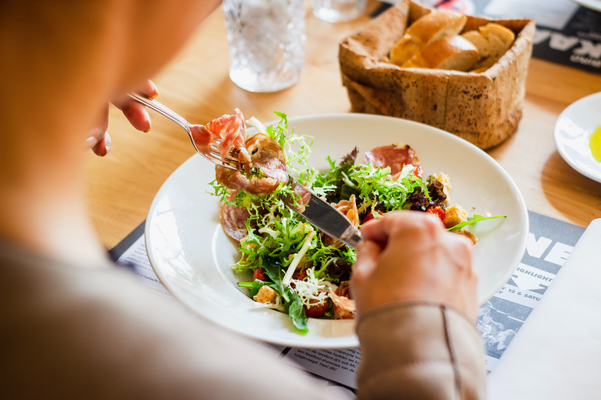

About Us
Taste of Home was founded in 1993 on a simple premise: home cooks are the best cooks. Special recipes are at
the heart of so many of our warmest memories—families gathered around holiday tables or celebrating special
occasions with friends. Even neighborhood potlucks, impromptu cookouts and simple weeknight dinners are made
better by sharing from-scratch dishes made with love. It has been our privilege to share recipes and cooking
inspiration with millions of people for almost three decades through our magazines, books, videos and
website.

What we do
Home cooks send us about 10,000 recipes every year. But before a recipe is published, it must be Test
Kitchen-approved. Here’s how it works:
Our knowledgeable food editors review each recipe we receive and send the best candidates to the Test
Kitchen. Testing every step, our Test Kitchen cooks ensure the amounts, equipment, temperature and method
are accurate. If something doesn’t turn out as expected, they make adjustments until the recipe is right.
The Test Kitchen hosts tasting panels, where a group of expert editors and culinary staff evaluates them on
flavor, texture, appearance and ease of preparation. When we’re satisfied, we send the recipe back to the
Test Kitchen for final preparation, then to the photo studio to be styled and shot. At that point, the
recipe is ready to be published so you can make it in your own kitchen.
We don’t stop with recipes: our team tests packaged foods, kitchen gadgets and cleaning supplies, too. We’ve
spent countless hours vetting products in our thorough testing process to determine the best. Winners earn
our Test Kitchen-Preferred seal of approval.
Contact Us